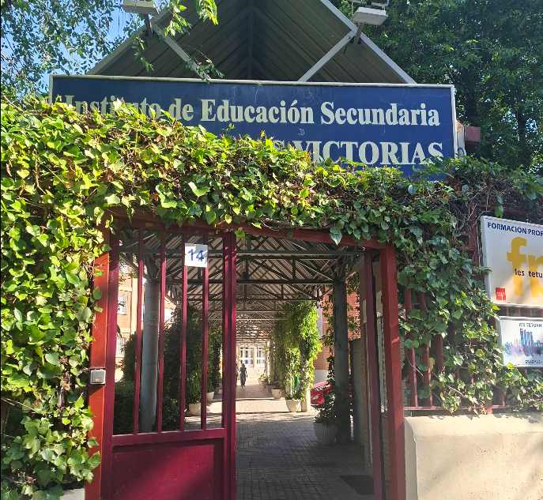

Quién soy
Mi presentación, cómo llegué al centro y qué significa para mí formar parte de él.

Soy alumno del IES Tetuán de las Victorias y quiero enseñarte el centro tal como yo lo vivo: sus aulas, las personas y todo lo que he aprendido aquí.

Mi presentación, cómo llegué al centro y qué significa para mí formar parte de él.
Los espacios que usamos cada día, sus servicios y cómo es estudiar en Tetuán.
Módulos, proyectos y aprendizajes que me preparan para mi futuro profesional.